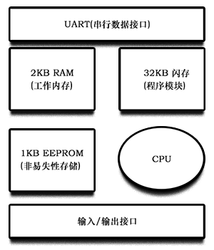

Arduino Note
Arduino 智能小车
Arduino 笔记
什么是Arduino?
Arduino 源自 II 世纪北意大利国王的名字。这个开放项目 早由 Masimo Ban zi、 Oavid Cuartiellcs Oavid Mellis Nich olas Zambetti 等人发起，目前已经发展了许多不同的版本.由于它的硬件及开发环境皆可以在网络上购买或下载，各国也出现了根据不同需求制作的专属版本，可供使用者自行购买。
鉴于它的高开发性、低人门门槛、便宜等优势，目前已经累积了不少忠实的爱好者。更因为它的程序语法简单易懂 吸引了不少非电子、电机领域的人加入使用的行列，它被运用在众多非专业电子、电机领域中，创造了各式各样的创新应用。
Arduino 板是带有 USB 接口的小型微处理器板，它可以与计算机和许多连接器相连，通过连接器又可以连接到外部电子装置和器件，如电机、继电器、光传感器、激光二极管、喇叭、麦克风，等等。Arduino 板可以通过USB接口从计算机供电，也可以用 9V 电池直接供电。可以直接用计算机对其进行控制，也可以经计算机编程后再断开连接使其独立工作。
Arduino 是一个开源的、拥有简单输入/输出(I/O)的电路板，它沿用了 Processing 语言的开发环境。Arduino 可以用来开发独立运作互动装置，或者可以连接到你计算机上的软件（例如：Flash、Processing、vvvv 或 Max/Msp）。
Arduino 软件:
程序开发流程
在做微处理器的程序开发时，最关键的一步就是将程序编译成单片机看得懂的机器语言，而这部分工作多半由计算机上的相关程序来执行。一般来说，微处理器系统开发商会搭配特定软件供使用者撰写其应用程序。不同于高阶的程序设计语言，目前常用于单片机系统的程序代码为汇编语言（Assembly）、C/C++等种类。典型的程序开发流程为：编辑→编译→链接→执行。
- 编辑：产生程序代码。扩展名多为.c、.cpp等。
- 编译：把程序代码转换为机器码，检查程序上的错误，并提出警告。
- 链接：寻找程序当中所有用到的功能模块、内建函数库原始程序的位置，再与主程序结合成为一个可执行文件，例如，引用头文件。
- 执行：执行程序后，可看到程序的运行结果。
烧 录
执行测试程序时通常需要先进行烧录，也就是将程序下载到芯片中。这个工作大都需要特殊的线路，以前常用的接口为串行端口和并行端口，也就是台式计算机后头的 9-Pin 和 25-Pin 两种接口，不过新的烧录接口慢慢都被 USB 所统一了。烧录接口还有功能性差异，最基本的就只是将编译完的程序直接烧录，而进阶版的则可以支持单步执行，这个功能可以让开发者逐行执行程序，更容易发现问题所在。这类高阶的烧录器通常称为 JTAG（Joint Test Action Group）。
Arduino 的核心芯片也支持 ISP（In System Programming）功能。所谓 ISP，就是在无需改变硬件连接甚至硬件处于执行阶段也可以随时下载新的程序代码进入芯片内存中。这样的好处在于，烧录程序时单片机不需要拔离系统电路，节省时间与额外成本。
板子上标示着 ICSP 的 6 个针脚，用于烧录程序；烧录 Bootloader 也是通过这里，不过还需要其他的烧录装置。
Arduino 非常人性化的简化的烧录流程，只要使用与计算机连接的 USB 线即可。这都归功于 Arduino 的 Bootloader。
Bootloader，顾名思义就是开机后会加载的一个程序，会帮助系统加载程序。单片机重置时，第一个步骤会是先跳到 Bootloader 来判断接下来进入的数据属于程序代码还是一般数据，若是属于程序代码，就会安排置于内存中的其余空间内。以旧版的 Arduino 芯片 ATMEGA8 来说，Bootloader 会占掉 Flash 内存中大约 1KB 的大小。有好处就有坏处，因为 Bootloader 的存在，造成系统电源开启时，会感觉程序并没有马上执行，需要等待约几秒的时间，旧版更为明显。在 ATMEGA328 中，这种情况已经有所改善，但还是感觉得出来。
安装 USB 驱动使得计算机能够通过 USB 接口与 Arduino 系统进行通信，主要用于编程和传递信息。
安装 Arduino 开发坏境，在你的计算机上运行这个软件程序后，可以在坏境中编写项目文件，并将其下载至 Arduino 板子上。
Arduino 硬件:
- 14个数字引脚（0-13）
- 6个模拟输入引脚（0-5）
- 6个模拟输出引脚（3、5、6、9、10、11）
板子正常工作的电源电压范围是 9~12V。
电路板可以由USB或是外部的直流9V变压器供电。如果同时接上两种电源，供电顺序会以外接电源优先。
在 Arduino 上会有两颗LED灯显示传送 (TX) 和接收 (RX) 状态，每传送一个字节，该灯就闪烁一次。在整个上传过程，该 LED 会持续呈现闪烁状态。
Arduino 基本电路
CPU 从闪存中读取程序指令然后执行它们。这可能从工作内存(RAM)中读取数据，进行处理后再返回内存。或者，它可能是将 0~5V 的电压变为某一数字输出。
电可擦除可编程随机存储器(EE-PROM)中存储的内容不会因为关闭或是打开设备而丢失。和闪存适合于存储程序指令(从程序模块中获得)不同，EEPROM 用于存放不希望在设备重启或是电源出现故障时丢失的数据。
Arduino 的主要组成以 2 个芯片为主，第一个是 Atmel 公司生产的 ATMEGA8 系列单片机，较新的版本为 ATMEGA328，旧版有 ATMEGA8 和 ATMEGA168。
第二个芯片是 FT232，USB 与 RS-232 的转换芯片。该芯片负责 Arduino 与计算机的所有通信，包括了烧录程序、传递数据等。
